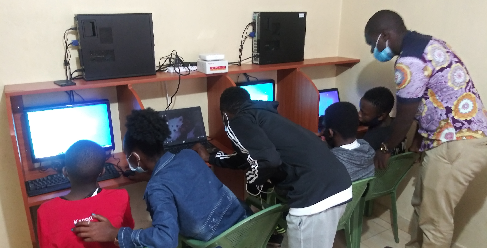

<section class="intro">
    <span class="intro-text">A sanctuary of hope and future excellence.</span>
</section>
<section class="nav main-content">
    
    <div class="legend">
        <div class="one"><i class="fas fa-graduation-cap"></i><p >Learn with<br><span class="subdued">the best</span></p></div>
        <div class="divider"></div>
        <div class="two"><i class="fas fa-hands-helping"></i><p >embrace a needy <br><span class="subdued">soul</span></p></div>
        <button class="donate">Donate</button>
    </div>

</section>
<section class="menu-bar">
    <div class="menu main-content">
        <ul class="main-menu">
            <li>about</li>
            <li>get involved</li>
            <li>calendar</li>
            <li>contacts</li>
        </ul>
        
        <ul class="links">
            <li><input type="text" placeholder="Search.." class="search"></li>
            <li><i class="fab fa-facebook-f"></i></li>
            <li><i class="fab fa-twitter"></i></li>
            <li><i class="fab fa-youtube"></i></li>
        </ul>
    </div>
</section>

<section class="carousel-content">
    <div id="carouselExampleIndicators" class="carousel slide carousel-fade" data-bs-ride="carousel">
        <div class="carousel-indicators">
          <button type="button" data-bs-target="#carouselExampleIndicators" data-bs-slide-to="0" class="active" aria-current="true" aria-label="Slide 1"></button>
          <button type="button" data-bs-target="#carouselExampleIndicators" data-bs-slide-to="1" aria-label="Slide 2"></button>
          <button type="button" data-bs-target="#carouselExampleIndicators" data-bs-slide-to="2" aria-label="Slide 3"></button>
        </div>
        <div class="carousel-inner">
          <div class="carousel-item active" data-bs-interval="10000">
              <div class="carousel-text">
                  <h3>Bringing hope to <br><span class="bolder">communities</span></h3>
                  <span class="action-buttons">
                      <button class="donate">Get Involved</button>
                      <button class="donate">See More</button>
                  </span>
              </div>
            
          </div>
          <div class="carousel-item" data-bs-interval="5000">
            <div class="carousel-text">
                <h3>promoting wholistic<br><span class="bolder">families</span></h3>
                <span class="action-buttons">
                    <button class="donate">Get Involved</button>
                    <button class="donate">See More</button>
                </span>
            </div>
            
          </div>
          <div class="carousel-item" data-bs-interval="5000">
            <div class="carousel-text">
                <h3>positive engagement for<br><span class="bolder">youth</span></h3>
                <span class="action-buttons">
                    <button class="donate">Get Involved</button>
                    <button class="donate">See More</button>
                </span>
            </div>
            
          </div>
        </div>
        <button class="carousel-control-prev" type="button" data-bs-target="#carouselExampleIndicators" data-bs-slide="prev">
          <span class="carousel-control-prev-icon" aria-hidden="true"></span>
          <span class="visually-hidden">Previous</span>
        </button>
        <button class="carousel-control-next" type="button" data-bs-target="#carouselExampleIndicators" data-bs-slide="next">
          <span class="carousel-control-next-icon" aria-hidden="true"></span>
          <span class="visually-hidden">Next</span>
        </button>
      </div>
</section>
<!-- <section class="main-content">
    <router-outlet></router-outlet>
</section> -->
